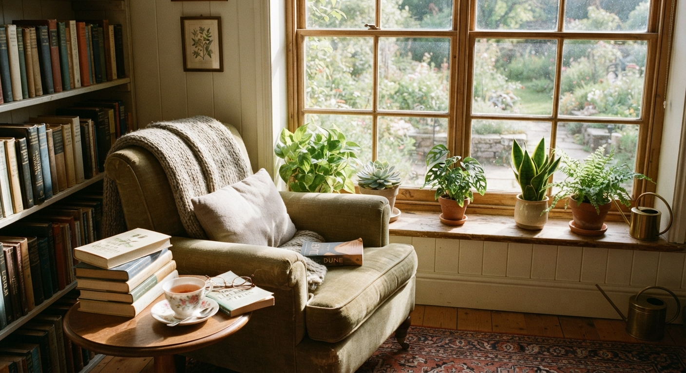

Holy Ground & An Eight-Foot Nutcracker
One of the privileges of this work is being invited into people’s spaces and their homes—layered with time, memory, and evidence of living.
Read full post →Chaplain Chats are short reflections I send to my team on Friday mornings inspired by my work as a hospice chaplain. Some are about things I’ve witnessed at the bedside. Some are about the things we avoid talking about until we have to. Others have very little to do with death at all, except that hospice has a funny way of making you notice life differently.
They’re not meant to tell you what to believe or how to feel. They’re an invitation for you to pause, get curious, and maybe see something ordinary from a slightly different angle.

One of the privileges of this work is being invited into people’s spaces and their homes—layered with time, memory, and evidence of living.
Read full post →
Sometimes our role isn’t to understand every interaction. It’s simply to witness it with curiosity instead of judgment and create space for love.
Read full post →
There is a science to dying, and yet there is also a mystery. Our work is not to choose between those two truths, but to hold them together.
Read full post →